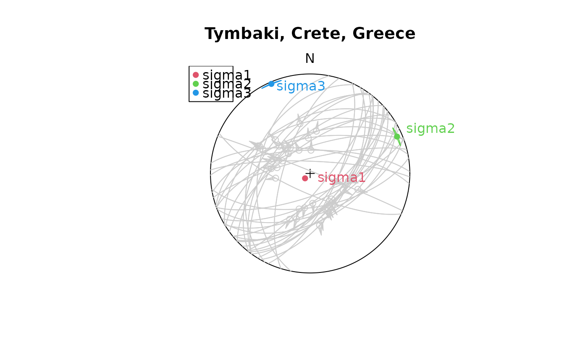

Linear stress inversion (based on Michael, 1984) determines the orientation of the principal stresses from fault slip data. Confidence intervals are estimated by bootstrapping. This inversion is simplified by the assumption that the magnitude of the tangential traction on the various fault planes, at the time of rupture, is similar.
Arguments
- x
"Fault"object where the rows are the observations, and the columns the coordinates.- boot
integer. Number of bootstrap samples (10 by default)
- conf.level
numeric. Confidence level of the interval (0.95 by default)
- friction
numeric. Coefficient of friction (0.6 by default)
- ...
optional parameters passed to
confidence_ellipse()
Value
list
stress_tensormatrix. Best-fit devitoric stress tensor
principal_axes"Line"objects. Orientation of the principal stress axesprincipal_axes_conflist containing the confidesnce ellipses for the 3 principal stress vectors. See
confidence_ellipse()for details.principal_valsnumeric. The proportional magnitudes of the principal stress axes given by the eigenvalues of the stress tensor: \(\sigma_1\), \(\sigma_2\), and \(\sigma_3\)
principal_vals_conf3-column vector containing the lower and upper margins of the confidence interval of the principal vals
principal_faultPrincipal fault planes as
"Fault"objects.SHmaxnumeric. Direction of maximum horizontal stress (in degrees)
SHmax_CInumeric. Confidence interval of
SHmaxangleRnumeric. Stress shape ratio after Gephart & Forsyth (1984): \(R = (\sigma_1 - \sigma_2)/(\sigma_1 - \sigma_3)\). Values ranging from 0 to 1, with 0 being \(\sigma_1 = \sigma_2\) and 1 being \(\sigma_2 = \sigma_3\).
R_confConfidence interval for
Rphinumeric. Stress shape ratio after Angelier (1979): \(\Phi = (\sigma_2 - \sigma_3)/(\sigma_1 - \sigma_3)\). Values range between 0 (\(\sigma_2 = \sigma_3\)) and 1 (\(\sigma_2 = \sigma_1\)).
phi_confConfidence interval for
phibottnumeric. Stress shape ratio after Bott (1959): \(\R = (\sigma_3 - \sigma_1)/(\sigma_2 - \sigma_1)\). Values range between \(-\infty\) and \(+\infty\).
bott_confConfidence interval for
bottbetanumeric. Average angle between the tangential traction predicted by the best stress tensor and the slip vector on each plane. Should be close to 0.
beta_CInumeric. Confidence interval of
betaanglesigma_snumeric. Average resolved shear stress on each plane. Should be close to 1.
fault_datadata.framecontaining the beta angles, the angles between sigma 1 and the plane normal, the resolved shear and normal stresses, and the slip and dilation tendency on each plane.
Details
The goal of slip inversion is to find the single uniform stress tensor that most likely caused the faulting events. With only slip data to constrain the stress tensor the isotropic component can not be determined, unless assumptions about the fracture criterion are made. Hence inversion will be for the deviatoric stress tensor only. A single fault can not completely constrain the deviatoric stress tensor a, therefore it is necessary to simultaneously solve for a number of faults, so that a single a that best satisfies all of the faults is found.
References
Michael, A. J. (1984). Determination of stress from slip data: Faults and folds. Journal of Geophysical Research: Solid Earth, 89(B13), 11517–11526. doi:10.1029/JB089iB13p11517
See also
Fault_PT() for a simple P-T stress analysis,
SH() and SH_from_tensor() to calculate the azimuth of the maximum horizontal stress;
Mohr_plot() for graphical representation of the deviatoric stress tensor.
Examples
set.seed(20250411)
# Use Angelier examples:
res_TYM <- slip_inversion(angelier1990$TYM, boot = 100, n = 1000, res = 100)
# Plot the faults (color-coded by beta angle) and show the principal stress axes
stereoplot(title = "Tymbaki, Crete, Greece", guides = FALSE)
fault_plot(angelier1990$TYM, col = "gray80")
stereo_confidence(res_TYM$principal_axes_conf$sigma1, col = 2)
stereo_confidence(res_TYM$principal_axes_conf$sigma2, col = 3)
stereo_confidence(res_TYM$principal_axes_conf$sigma3, col = 4)
text(res_TYM$principal_axes, label = rownames(res_TYM$principal_axes), col = 2:4, adj = -.25)
legend("topleft", col = 2:4, legend = rownames(res_TYM$principal_axes), pch = 16)

res_AVB <- slip_inversion(angelier1990$AVB, boot = 100, n = 1000, res = 100)
stereoplot(title = "Agia Varvara, Crete, Greece", guides = FALSE)
fault_plot(angelier1990$AVB, col = "gray80")
stereo_confidence(res_AVB$principal_axes_conf$sigma1, col = 2)
stereo_confidence(res_AVB$principal_axes_conf$sigma2, col = 3)
stereo_confidence(res_AVB$principal_axes_conf$sigma3, col = 4)
text(res_AVB$principal_axes, label = rownames(res_AVB$principal_axes), col = 2:4, adj = -.25)
legend("topleft", col = 2:4, legend = rownames(res_AVB$principal_axes), pch = 16)